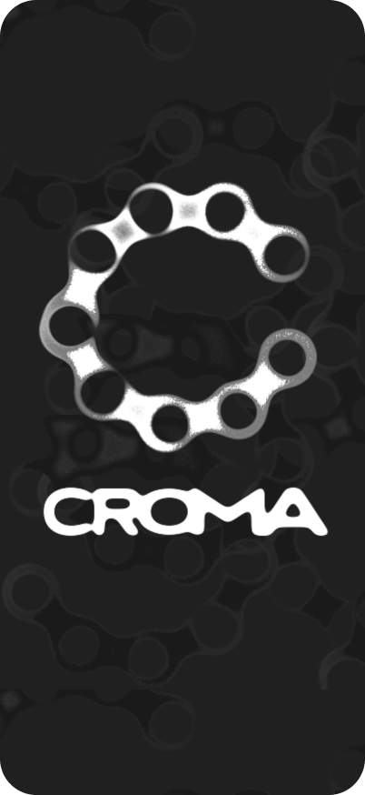

Rotas pensadas
para bicicleta
Busque seu destino e encontre diferentes possibilidades de rota para chegar até ele de bicicleta.

FEITO PARA QUEM PEDALA
Escolher uma rota de bicicleta vai além de encontrar o caminho mais rápido. Com o CROMA!, você entende o percurso e escolhe como quer pedalar.
Conheça o CROMA!Mais informação no caminho. Mais liberdade na escolha.

01 / EXPLORE AS POSSIBILIDADES
Encontre rotas pensadas para quem pedala e compare as opções. Escolha o percurso que faz mais sentido para o seu pedal.
Busque seu destino e encontre diferentes possibilidades de rota para chegar até ele de bicicleta.
Confira distância, tempo estimado e altimetria das opções disponíveis antes de iniciar seu trajeto.
Veja os diferentes tipos de via presentes na rota e o nível de proteção oferecido em cada trecho.
 INFORMAÇÃO TAMBÉM MOVE.
INFORMAÇÃO TAMBÉM MOVE.02 / PEDALE COM MAIS INFORMAÇÃO
Entenda as diferenças entre os tipos de vias por meio de conteúdos informativos desenvolvidos para quem pedala.
Acesse informações sobre os direitos dos ciclistas e entenda melhor seu espaço no trânsito.
03 / DO DESTINO AO PEDAL
Encontre possibilidades para chegar de bicicleta aonde você quer ir.
Considere distância, tempo, altimetria e as características das vias.
Entenda por onde vai passar antes de sair e encontre a rota que combina com seu pedal.
Contribua com informações sobre vias que ainda precisam ser atualizadas e ajude a melhorar os dados disponíveis no OpenStreetMap.
Consulte o histórico dos seus últimos trajetos e acesse novamente rotas pesquisadas anteriormente.
ESTAMOS POR AQUI
Encontre respostas ou entre em contato com o suporte do CROMA!.